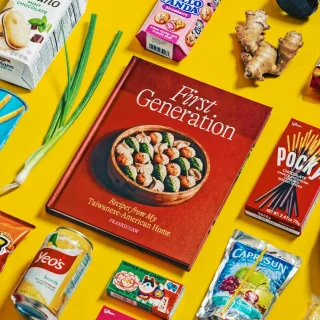
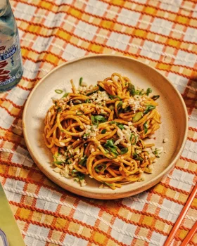
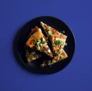
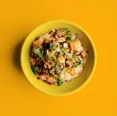
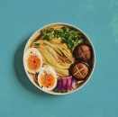
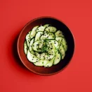

My cookbook, First Generation: Recipes From My Taiwanese-American Home is available wherever cookbooks are sold!
Recipes and stories that explore what it means to be Asian American.
Hey there! I'm Frankie. I've always felt somewhere in-between, being culturally American yet not white enough, and too American to never quite fit in to my own Taiwanese roots. I started this website as a place where I could explore my identity through food and share the recipes that define me as a Taiwanese American first-gen kid.
You'll find everything from recipes passed down from my family to dishes that blend the cultural lines and make my ancestors pass out (and that's okay!). I just want it to feel like you’re eating in my grandma’s kitchen and getting the best kind of fat with 10 year old plump me, pork buns stuffed in the face in a suburban midwestern kitchen full of steam and nostalgia.
What's cooking this week
-

Grilled Cheese for a Bad Day with Scallion Mayonnaise
An indulgent play off the classic grilled cheese featuring melted gruyere and cheddar alongside apple and scallion mayonnaise oozing between two thick slices of artisan bread.
-

Spaghetti with Creamy Red Bell Pepper Ginger Sauce
A simple bowl of pasta made with spaghetti tossed with a creamy red bell pepper and ginger sauce. A bowl of carbs made for comforting meal while being simple to put together.
-

Zuppa Toscana Congee
Simple congee serves as the perfect base for the flavors of the iconic Zuppa Toscana soup from Olive Garden. The congee features a comforting base filled with ground pork, kale, garlic, and sliced potato.

Growing Up with A White Grandma | Scallion Roast Chicken
A recipe and story on how this Taiwanese American whole roasted chicken came to be. A dish who's flavors are soaked in a wet brine of scallion, ginger, and nostalgia.
Dumplings you'll love

-

Grandma’s Pork Dumplings
I love this little dumpling so much. It has been with me since I was a kid. It's meaty, juicy, ginger-y and oh so plump. Steam them, fry them, they all go great in the tum.
-

Butternut Squash and Pork Dumplings
A pan fried dumpling filled with juicy pork and roasted butternut squash. A recipe/activity full of warm fall smells and comfort.
-

Chili Crisp Pork and Apple Dumplings
A dumpling to warm your belly in the winter. Juicy pork is marinated with apple and chili crisp for the perfect spicy, sweet, and savory bite.
-

Pork and Shrimp Dumplings
A nostalgic dumpling that reminds me of my grandma's dumplings, filled with pork, shrimp, carrots and seasoned with homemade mushroom powder.
-

Bok Choy, Golden Beet, Mushroom Pork Dumplings
A vegetable forward dumpling featuring bok choy, shiitake mushrooms, and roasted golden beets that's then paired with ground pork.
-

Sweet Potato, Pork & Chili Crisp Dumplings
A savory and spicy dumpling filling full of chili crisp. It's spicy, savory, sweet and all the things you want to eat during the winter in a dumpling.
Latest recipes
-
.webp)
Stir-Fried Rice Cake Bolognese
An Asian American dish that pays homage to classic Italian bolognese but with the textures of stir fried rice making a surprsingly delicious chewy appearance.
-
 (1).webp)
Dan Bing (Taiwanese Breakfast Crepes)
A Taiwanese breakfast staple, this thin egg crepe is the perfect snack anytime of day. Eat on its own, drizzle it with sauce, or add in your favorite fillings.
-

Creamy Tomato Carrot and Ginger Soup
An homage to the creamy classic tomato soup flavored with the sweetness of sautéed carrot and the subtle zing of ginger.
-
.webp)
Grandma's Pearl Meatballs
A juicy, succulent pork and cabbage meatball covered in sticky rice and steamed until your kitchen smells like grandma's house.
-

Spaghetti with Creamy Red Bell Pepper Ginger Sauce
A simple bowl of pasta made with spaghetti tossed with a creamy red bell pepper and ginger sauce. A bowl of carbs made for comforting meal while being simple to put together.
-

Grilled Cheese for a Bad Day with Scallion Mayonnaise
An indulgent play off the classic grilled cheese featuring melted gruyere and cheddar alongside apple and scallion mayonnaise oozing between two thick slices of artisan bread.
Most popular recipes this week
-

Dad’s Scallion Pancakes
An all time classic for any Taiwanese family, these flaky crispy layered pancakes are my obsession. My dad used to make these for me all time the time and they go right from the frying pan into my mouth.
-

Steamed Pork Buns
This steamy, juicy pork bun represents my heritage, my midwest nostalgia in kitchen at grandma's as a kid, and the reason why I love eating and cooking.
-

Ohio Corn Soup
My dad used to always make me cream of corn soup using canned corn from the supermarket. This is a more refined version that is simple but is packed with sweet and savory corn flavor.
-

Steamed Egg with Mushrooms and Squash 蒸水蛋
A warm steamed egg with roast fall vegetables that's perfect for cold weather. This a grandma treat that is really savory with a texture that is light and silky.
-

Salt & Pepper Taiwanese Fried Chicken
Fried chicken only from gua bao recipe. Crunchy, salty, peppery and delicious. An ode to night markets, this chicken's secret sauce (or batter so to speak) is sweet potato starch.
Browse by category
-

Dumplings & Bao
15$
0
-

Bing (餅)
10$
0
-

Rice
13$
0
-

Noodles
25$
0
-

Small Eats
17$
0
your cart:
promocode: